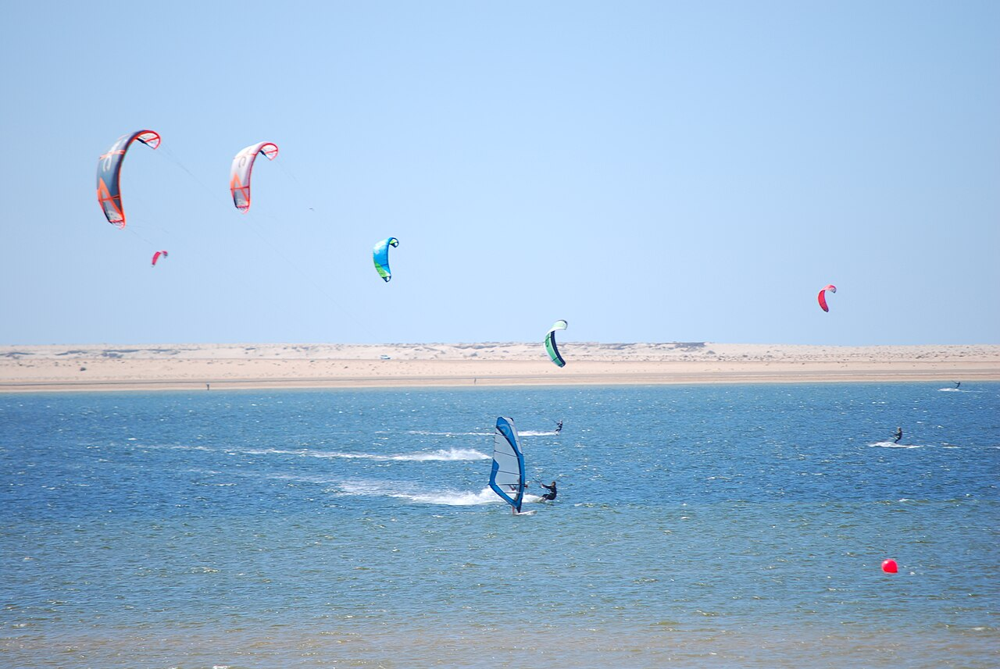

Lagune de Dakhla
Maroc · kitesurf, windsurf

Immense lagune plate et peu profonde, vent thermique quasi quotidien : l'un des meilleurs spots d'apprentissage du kite au monde.
- Lieu
- Maroc
- Niveau
- Débutant
- Activités
- kitesurf, windsurf
- Type d'eau
- Mer / océan
- Coordonnées
- 23.71, -15.93 (position approximative du secteur)
Dangers à connaître
- Marée qui découvre des bancs de sable.
- Site isolé en plein désert.
Le conseil d'Ocean Buddy
Plan d'eau plat idéal pour les premières sessions.
Ouvrir dans Ocean Buddy Télécharger sur l'App Store
Source : Description historique Ocean Buddy · vérification externe en attente.